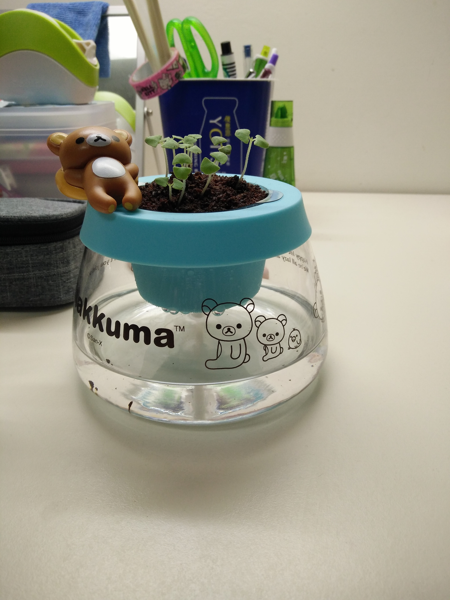

2018/03/30
將種子種入椰糠中
以棉線引水濕潤椰糠
2018/04/08
長出小芽
此階段塑膠盆白天放在陽台
傍晚放在宿舍桌上
2018/04/15
小芽抽高
種子灑太多
塑膠盆感覺空間不太夠
2018/04/18
九層塔持續長高
拔掉了一些太小株、有些枯萎的植株
2018/04/27
將九層塔換到較大的盆栽中
土則是原本的椰糠加上泥土
再混一點咖啡渣組合而成

2018/05/05
從換另一個盆栽之後
九層塔就固定放在陽台了
每天早起澆一點水
摘除枯萎的葉子
2018/05/29
拔除枯萎的葉子和矮小的植株
在盆栽中發現很小很小的蝸牛
九層塔持續長高中
只是仍然會有枯葉出現
2018/06/04
摘除枯葉
摘除的植株和葉子都放在盆栽中
當作土壤裡的肥料
摘完葉子後手裡有香味
類似薄荷的味道
九層塔有長高

2018/06/12
在拔掉了幾株比較矮的九層塔後
枯葉的情形有減少
剩下的九層塔穩定成長
2018/06/15
因為天氣不好下大雨
九層塔感覺有點萎萎的
部分葉子尖端又出現枯萎情形